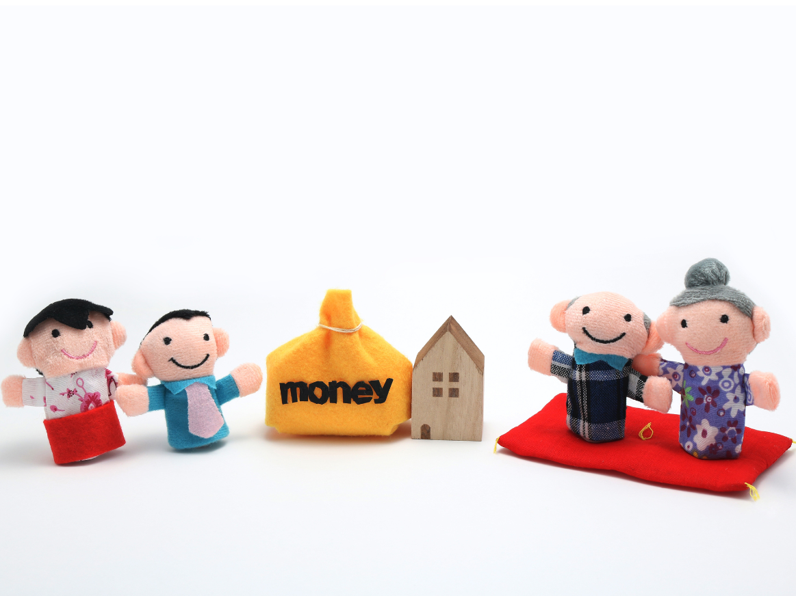

ブログ
時効援用にまつわる知識と最新情報を、行政書士の視点からわかりやすくお届けいたします。
ブログ
時効援用にまつわる知識と最新情報。民法改正・判例・実務の注意点・信用情報との関係など、ご自身で判断するときの手がかりになる記事をまとめています。
時効援用とは何か──5分で分かる基本
払わなくていいお金が法律上「消えている」状態を、本人が意思表示して初めて確定させる仕組みです。

携帯電話料金の時効が5年になった理由（民法改正）
2020年4月の民法改正で、携帯料金のような事業者間の短期消滅時効が原則「5年」に統一されました。
NHK受信料の時効援用、最高裁判決のポイント
平成26年9月5日最高裁判決で、受信料債権は5年で時効にかかることが確定しました。
「少しだけ払います」と言ってしまった場合、時効はどうなる？
一部弁済や支払約束は、債務の承認として時効を更新してしまいます。対応を誤ると時効が振り出しに戻ります。
債権回収会社（サービサー）から督促が来たらどうするか
元の事業者ではなく見知らぬ社名から督促が届いたケース。債権譲渡の事実と時効起算点を確認します。
電子内容証明（e内容証明）とは？普通の内容証明との違い
24時間オンラインで差し出せる電子版の内容証明。窓口まで行かずに配達証明まで受け取れます。
時効援用が通らなかったら？不承認時の対応
相手が承認しないケースや支払督促で争うケースで、次に打てる手立てと弁護士へ引き継ぐ境界線を解説します。
クレジット情報（CIC・JICC）に傷がついた場合
未払いが信用情報に載っている場合、時効援用後も一定期間は記録が残ります。正確な回復時期を整理します。
時効援用後、何年で信用情報は回復するのか
CIC・JICC・KSCの保有期間はそれぞれ異なります。登録期間の目安と開示請求の手順を説明します。

支払督促が裁判所から届いたら──行政書士ではなく弁護士へ
簡易裁判所からの支払督促は、放置すると仮執行宣言が付きます。2週間以内の異議申立てが必要です。

家族名義の携帯料金の請求、対応できるのか
名義人本人しか時効援用できません。委任状の扱いと、ご家族ができる範囲を整理します。
相続した借金の時効援用、可能な範囲
相続人は亡くなった方の債務を承継します。援用権も同時に引き継ぐため、時効援用通知書で対応可能です。
引越し後に督促が届いた──住所変更の影響
何年も経ってから新住所にハガキが届くケース。郵便転送や債権者の住所調査の実情を解説します。
海外赴任中の未払い、時効援用できる？
住所が海外でも時効援用は可能です。電子内容証明の差出可否と、日本の連絡先確保の要点を示します。
ガラケー時代の端末代金残債、処理方法
ガラケー時代の分割残債が今になって請求されるケース。端末代金と通信料金で取扱いが分かれます。
Y!mobile・UQモバイル・格安SIMの時効援用事例
大手キャリアに加え、サブブランドや格安SIM各社からの請求事例が増えています。対応は基本同じです。
時効援用通知書に書くべき必須事項
契約特定の記載、時効期間の主張、援用の意思表示。抜けがあると相手から反論される余地が生まれます。
行政書士と弁護士、時効援用はどちらに依頼すべき？
争いがない書面作成は行政書士の業務範囲。交渉・訴訟に入ったら弁護士。境界線を具体例で整理します。
経営者・自営業者の時効援用、信用情報との関係
融資・カード審査に影響する信用情報。経営判断で早めに整理したい場合の実務上の留意点を示します。
時効援用後の確認方法：通知書が届いたかの確認手順
配達証明郵便を受け取った日付の確認方法と、その後相手から連絡が途絶えたかを見届けるポイントです。